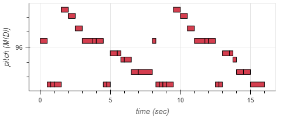

UFABC
Prof Mário Minami
HOME
ESTI019 - Codificação de Sinais Multimidia - 3QS21 - Noturno
LAB 9 - MIDI e Simulação de ambientes acústicos (IR)
Objetivos
Your browser does not support the audio element.
Introduzir o processo tecnico de manipulação sonora a partir de sintetizadores, gerando e reproduzindo tons por manipulação direta da frequequencia, e utilizando também os recursos do formato MIDI para a geração e reprodução de audios. Além disso será feita a simulação da resposta impulsiva às ondas sonoras em alguns ambientes.
Parte 1 - Composição a partir de manipulação direta
Your browser does not support the audio element.
Para a síntese do áudio musical são necessárias algumas informaçãoes como, frequência (tom), duração, intensidade e timbre. Nesta primeira parte atuou-se via código sobre as duas primeiras variaveis manualmente, nota a nota, para composição musical. Fixou-se o timbre por padrão de piano, e trabalhou-se com intensidade fixa. Utilizou-se a biblioteca magenta e not_seq para esta operação. A trilha foi criada usando o metodo construtor music_pb2.NoteSequence(), e as nostas configuradas usando o método .notes.add(). Cada integrante disponibilizou sua trilha abaixo.
Your browser does not support the audio element.
Fig 1.0 - Audio Daniel: Borboletinha.
Your browser does not support the audio element.
Fig 1.1 - Audio Edson: O sapo.

Your browser does not support the audio element.
Fig 1.2 - Audio Eduardo: Cinco patinhos.
Your browser does not support the audio element.
Fig 1.3 - Audio Vitor: Parabéns pra você.
Parte 2 -
Your browser does not support the audio element.
Arquivos .ipynb para download:
Código utilizado
Powered by
w3.css